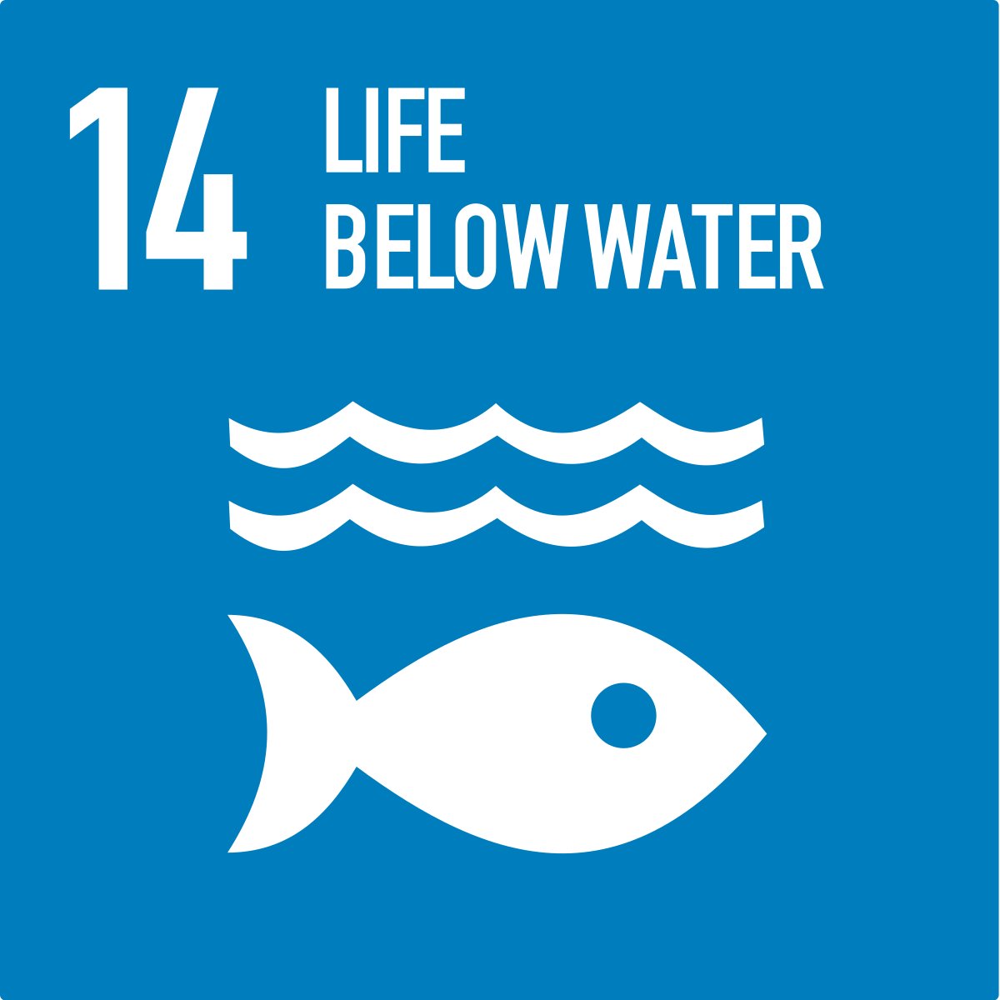
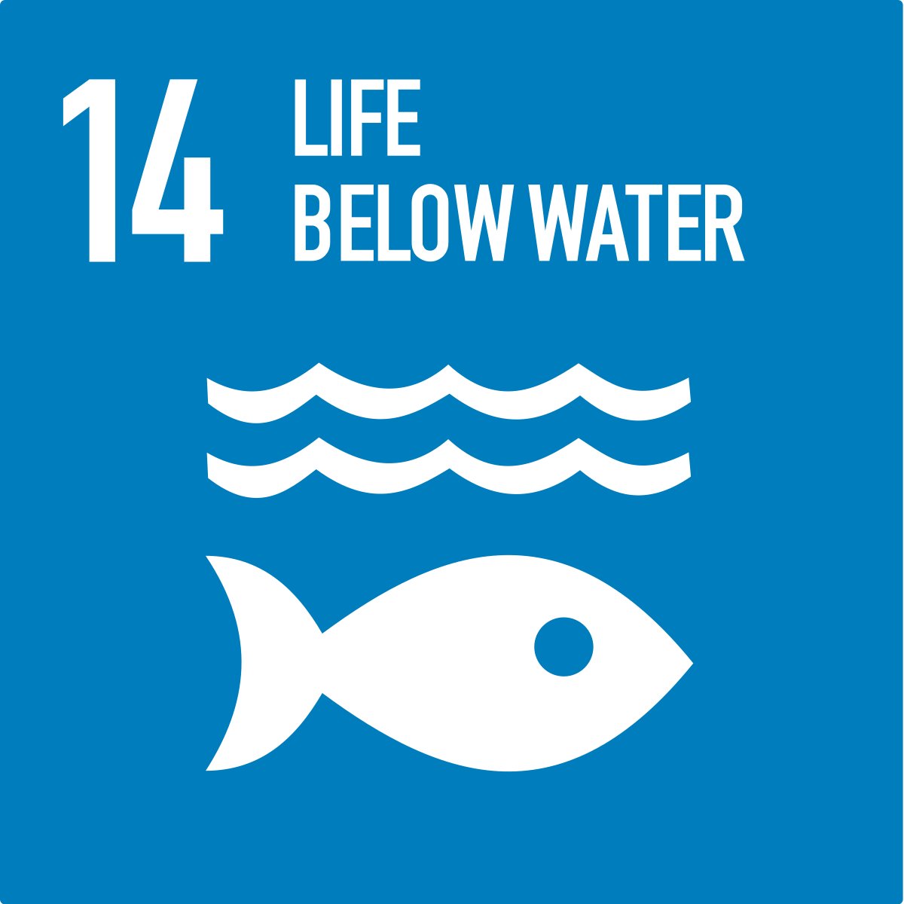

Agricultural Runoff
Soil erosion from agricultural activities can lead to sediment-laden runoff, reducing water clarity and disrupting aquatic habitats. Fertilizers containing nitrogen and phosphorus can be washed into water bodies, causing eutrophication and creating "dead zones" due to oxygen depletion. Pesticides and herbicides used to protect crops can contaminate water, harming aquatic life and potentially affecting human health. Additionally, animal waste from livestock operations can introduce pathogens into water sources, leading to waterborne diseases. Moreover, certain agricultural practices can introduce heavy metals into the environment, posing risks to both aquatic ecosystems and human health.
Improper Waste Disposal
When waste, including household garbage, industrial waste, and hazardous materials, is improperly disposed of, it can leach into the soil and make its way into water bodies through runoff or groundwater infiltration. This contamination can introduce a variety of pollutants into the water, including organic matter, heavy metals, chemicals, and pathogens. Organic waste can deplete oxygen levels in water, leading to the death of aquatic organisms, while heavy metals and chemicals can accumulate in aquatic ecosystems, posing risks to aquatic life and human health. Pathogens from untreated sewage can also contaminate water, causing waterborne diseases. Proper waste management practices, such as recycling, composting, and the safe disposal of hazardous materials, are crucial for preventing water pollution and protecting our water resources.
Urbanization
As cities expand, the increase in impervious surfaces like roads, rooftops, and parking lots reduces the amount of land where rainwater can naturally infiltrate the ground. This leads to increased surface runoff, which can carry pollutants like oil, heavy metals, and litter into nearby water bodies.
Additionally, urban areas often have inadequate wastewater treatment systems, leading to the discharge of untreated or inadequately treated sewage into rivers, lakes, and oceans. This can introduce pathogens, nutrients, and chemicals into the water, posing risks to aquatic ecosystems and public health.
 

Industrial Discharge
metals from Industrial Discharge like lead and mercury can accumulate in aquatic ecosystems, posing risks to aquatic life and human health. Toxic chemicals from industrial processes can harm aquatic organisms and persist in the environment, contaminating water supplies. Organic pollutants, including oils and hydrocarbons, can reduce oxygen levels in water, affecting aquatic life. Additionally, nutrient-rich wastewater can lead to eutrophication, causing harmful algal blooms and oxygen depletion. Effective wastewater treatment and pollution prevention measures are crucial to mitigate the impacts of industrial discharge on water quality and protect our water resources.
Mining Activities
During mining operations, chemicals such as cyanide, sulfuric acid, and heavy metals like lead, mercury, and arsenic can be used or generated. If not properly managed, these chemicals can leach into nearby water sources, contaminating both surface water and groundwater. This contamination can have detrimental effects on aquatic ecosystems, harming fish and other aquatic life, and can also pose risks to human health through drinking water contamination and consumption of contaminated fish and seafood. Additionally, sediment runoff from mining sites can degrade water quality by increasing turbidity, reducing water clarity, and disrupting aquatic habitats. Proper management practices, including the use of containment ponds, water treatment facilities, and erosion control measures, are essential to minimize the environmental impacts of mining activities on water resources.